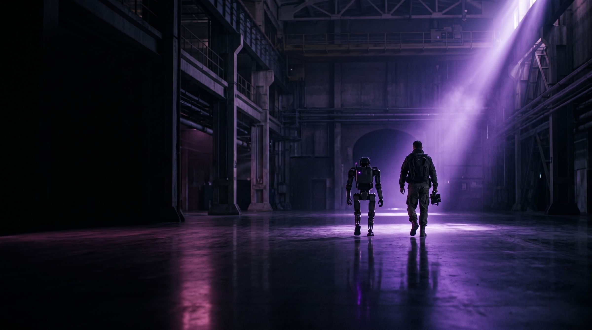

Manufacturing & Smart Industry
Inspection, automation and predictive maintenance for production environments.

We research, engineer and deploy intelligent systems across nine engineering domains, from the research question to a system running in production.
Intelligent systems are becoming infrastructure, and infrastructure has to be answerable. We take a question from research to a system running in production, and publish nothing we cannot evidence.
Core technologies


 Demo image
Demo imageInspection, measurement, navigation and decision-making from visual and depth data.
Research status is published honestly, and committed products are kept separate from open research areas.
What we do not yet know, written down so it can be answered.
The smallest thing that proves the answer holds.
Running against real conditions, instrumented and observed.
A system in production that someone can be held to.
Seven sectors where the engineering has somewhere to land. Scroll across.
Inspection, automation and predictive maintenance for production environments.

Recognition, sorting and autonomous movement inside distribution operations.

Laboratories, curriculum and applied project capability.

Monitoring, safety and service-delivery systems.

Condition monitoring, inspection and automation across distributed assets.

Assistive devices and clinical-support engineering within approved scope.

Verified engineering scope only, in autonomy and precision systems.
Ten solution areas, each a route from a business objective to a system that can be measured. Four of them below.
Turn a business objective into a governed, measurable AI capability.
Specify, integrate and commission robotic cells inside existing operations.
Process control, interlocks and cell sequencing for production.
Replace inconsistent manual inspection with auditable automated checks.
Protect your business, digital platforms and connected systems with TechnoBerg. We design, develop and deliver advanced cybersecurity solutions around your operational needs, from security assessments and architecture to deployment, testing and ongoing technical support.
Our US-based technical team, AM Cyber Security, brings 25 years of experience and leads the delivery of advanced cybersecurity solutions and custom security products.
Technical delivery led and executed by our US-based AM Cyber Security team, with 25 years of experience.
Security dashboards, workflows and integrations built around your business and existing systems.
Solutions for networks, endpoints, cloud environments, applications, identities and sensitive data.
Assessment, solution design, deployment, testing and support delivered to an agreed project scope.
Engineering and delivery.
Applied research, and delivery support.
Expansion under discussion.
A declared direction, not an offering.
Education and talent
Twenty-five programmes, four school offerings and three laboratory models. We identify capable people through sustained practical performance, then develop them into engineers and researchers from within.